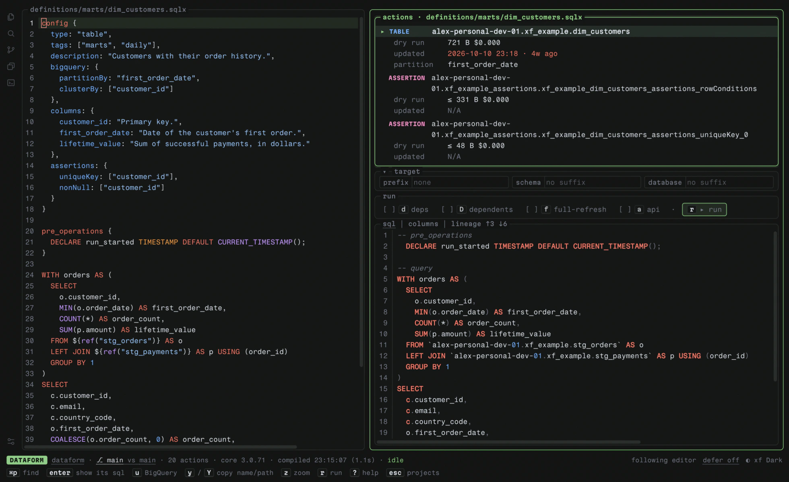
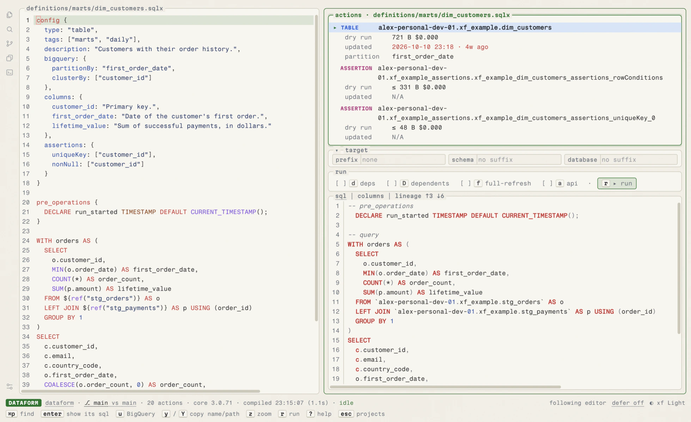

Dataform and dbt on BigQuery, in your browser.
Browse actions with their compiled SQL, columns and lineage, dry run and run them, edit source files, and see what your branch does to downstream columns and BigQuery query cost.
Other install options (curl, Go, Windows)
curl -fsSL https://xf.dataformtools.com/install.sh | sh
go install github.com/ashish10alex/xf/cmd/xf@latest
winget install AshishAlex.xf
xf web
One browser workspace for your project
Run xf web in any Dataform or dbt repository. Edit source files beside live compiled SQL, inspect schema columns and lineage, run Scratch queries or trace rows in the Dependency Inspector, and defer unbuilt upstream tables to prod.


Column impact · xf impact
See who reads a column before you drop it
Dry runs every changed table, view and incremental table and compares it with its table in BigQuery, then asks Dataplex Data Lineage who reads the columns it drops or retypes. A reader your branch changes is dry run too, to tell whether it still reads the column. Readers that can't be looked up are marked ❔, not passed.
Column impact · feat/customer-countries → main
The readers of 1 model couldn't be looked up. 2 models compared with prod tables in alex-personal-dev-01 · dataset xf_example · base 1fedc86
The models came from feat/customer-countries diffed against main, and their new columns were checked against the live tables in alex-personal-dev-01.
| # | Model | What changed | Who is affected | |
|---|---|---|---|---|
| 1 | ❔ | dim_customers | drops email; retypes lifetime_value (FLOAT64 → NUMERIC) | ❔ readers couldn't be looked up: no access to Data Lineage in alex-personal-dev-01: it needs the Data Lineage API enabled and roles/datalineage.viewer |
| 2 | 🆕 | customer_countries | new: nothing reads it yet | — |
❔ not checked, or its readers couldn't be looked up · 🆕 new on this branch
Query cost · xf cost
Know what a branch adds to your BigQuery bill
Dry runs every changed action with a query, which is free and runs nothing, and compares the bytes with the same action at the merge-base with main. It marks a read of a partitioned table that never names its partition column, and --fail-over fails a CI job over a size limit.
2 changed actions in feat/customer-countries vs origin/main @ 1fedc86 (working tree) dry run in alex-personal-dev-01 ✓ xf_example.dim_customers 606 B $0.000 -115 B (-$0.000) (was 721 B · $0.000) ⚠ xf_example.customer_countries ≤ 72 B $0.000 new [MISSING PARTITION FILTER: first_order_date on xf_example.dim_customers] ──────────────────────────────────────────────────────────── Total scanned: ≤ 678 B | Estimated cost: ≤ $0.000